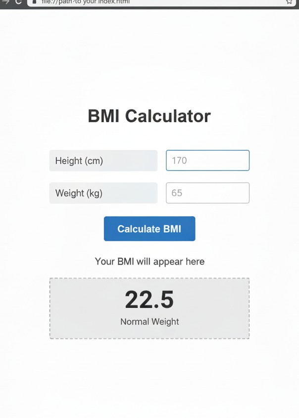

BMI Calculator Application

Project Purpose: High School National Examination
This BMI Calculator application was developed as the mandatory **Course Project component for the Computer Science High School National Examination (SPM)** in October 2021. The core objective was to demonstrate foundational proficiency in applying programming logic to a practical real-world problem.
**Technical Implementation:** The application was built using **JavaScript** for all computational logic, supported by HTML and CSS for a clean user interface. I gained hands-on experience in **JavaScript, problem-solving, and UI design** principles by implementing robust input validation and ensuring accurate calculation and display of the user's BMI classification.
Project Information
- Category: High School National Examination Project
- Date: October 2021
- Platform: JavaScript, HTML, CSS
- Key Skills: Algorithm Design, Input Validation